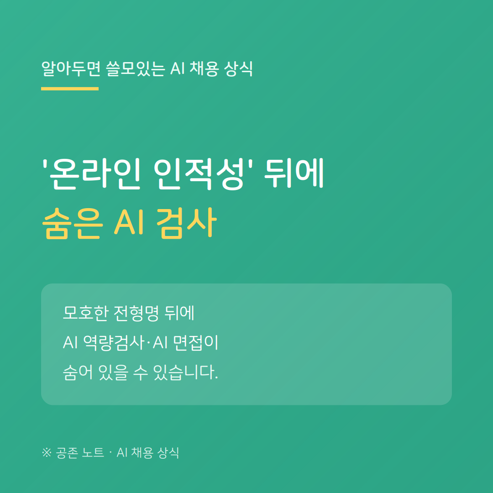

채용 공고를 보다 보면 '온라인 인적성', '온라인 평가', '사전 진단' 같은 모호한 이름의 전형을 만납니다. 별것 아닌 것처럼 보이지만, 여기에 정보의 격차가 있습니다.
이런 모호한 이름 뒤에 AI 역량검사나 AI 면접이 숨어 있는 경우가 적지 않습니다. '온라인 인적성'이라고만 안내하고, 실제로는 게임형 검사·성향 분석·영상 면접을 포함하는 식입니다.
기업은 무엇을 어떻게 평가하는지 알고 있습니다. 그런데 정작 응시하는 구직자는 그 방식을 미리 알기 어렵습니다. 이름만 보고 '간단한 시험'이라 여기고 준비 없이 응시했다가, 무엇을 측정당하는지도 모른 채 끝나는 경우가 생깁니다.
그래도 격차를 줄일 방법은 있습니다. 먼저 안내 메일이나 응시 링크에 '잡다·마이다스인·뷰인터' 같은 솔루션 이름이 있는지 보세요. 이름을 검색하면 그 솔루션이 게임형인지 영상형인지 알 수 있습니다. 안내에 정보가 부족하다면, '회사명 + AI 역량검사'로 먼저 응시한 사람들의 후기를 찾는 것이 가장 확실합니다.
공존 노트는, 기업만 알고 구직자는 모르는 이 정보의 격차를 좁히는 것이 우리가 할 일이라고 봅니다.
---
※ 전형 구성은 기업·시기에 따라 다를 수 있습니다.
공존 노트 · AI가 당신을 평가하는 시대, 구직자를 위한 안내서